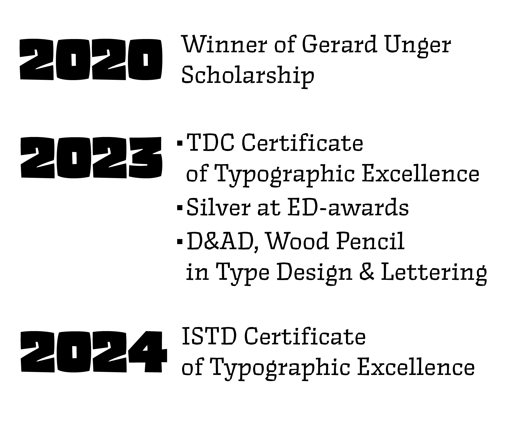

Hi! I'm Anya —
an independent type designer based in The Hague.
I designed Rezak, which
won
some nice awards, currently extending it to support
Georgian and Armenian. I build Cyrillic for various
retail releases,
custom fonts, complex
handwritten styles — and once, for a literal
building in Amsterdam.
I round strokes, tweak points,
inspect contours, proof huge font families
and can get too meticulous about spacing. I've drawn
emojis, written longform
essays about typographic elements,
taught classes, and curated gatherings for people
interested in type. On the side, I make fonts and
lettering — quietly, slowly,
and with no one to blame but myself. Feel free to get in touch.